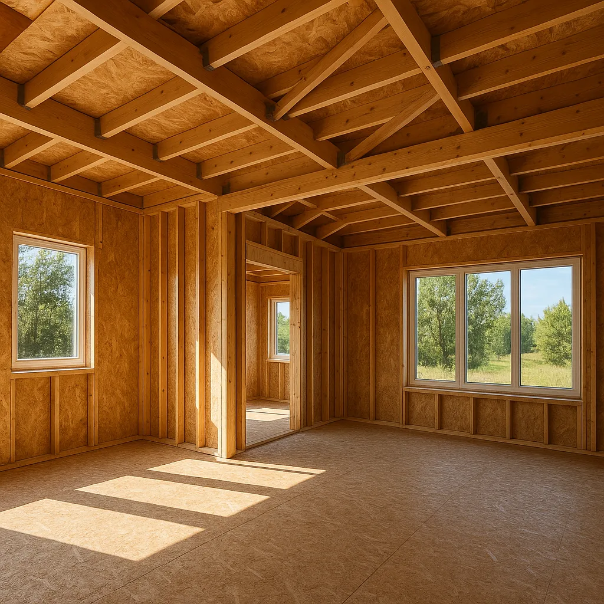
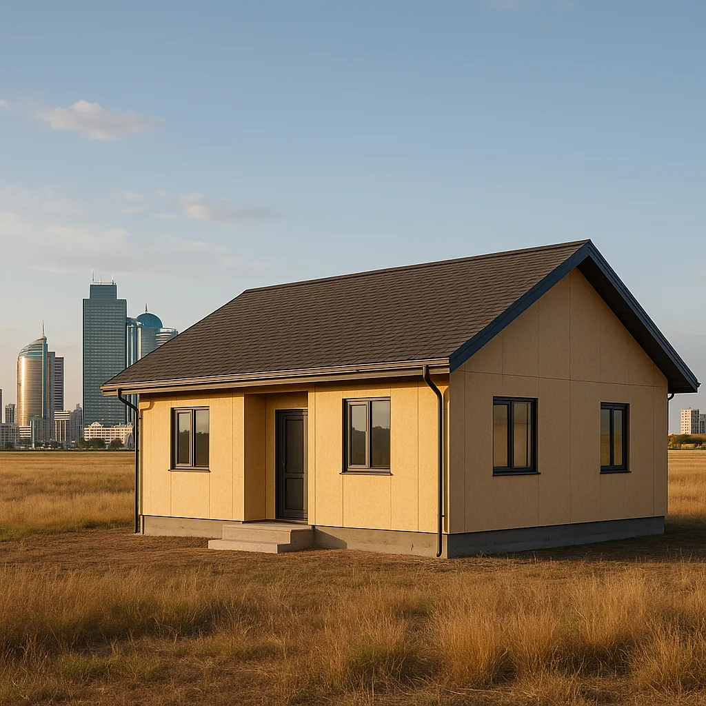

Преимущества строительства дома из СИП-панелей в Казахстане

Строительство домов из СИП-панелей в Казахстане активно набирает популярность. Эта технология привлекает внимание благодаря своим многочисленным преимуществам и возможностям. Но что же делает СИП-дома настолько привлекательными для казахстанцев? В этой статье мы подробно разберем особенности, плюсы и минусы строительства домов из СИП-панелей, а также дадим советы по выбору проекта.
Технология строительства домов из СИП-панелей
СИП-панели представляют собой структурно-изолированные панели, состоящие из двух слоев прочных материалов с изоляцией внутри. Обычно это два слоя ОСБ (ориентированно-стружечные плиты), между которыми находится слой пенополистирола. Технология возведения домов из таких панелей достаточно проста: панели соединяются между собой с помощью специальной системы креплений, образуя стены, полы и крыши. Важно отметить, что благодаря модульной системе, монтаж может быть выполнен быстро и без использования тяжелой строительной техники.
Преимущества СИП-домов в Казахстане
- Быстрота сборки: Благодаря легкости конструкции дом из СИП-панелей можно построить за несколько месяцев. Средний срок возведения дома площадью 150 квадратных метров занимает около 3-4 месяцев, включая отделочные работы.
- Энергоэффективность: СИП-панели обладают высокими теплоизоляционными свойствами, что позволяет экономить на отоплении в зимний период. Теплопроводность материала значительно ниже по сравнению с традиционными строительными материалами, такими как кирпич или бетон.
- Экологичность: Используемые материалы не выделяют вредных веществ, что делает дома безопасными для проживания. ОСБ плиты, которые применяются в производстве СИП-панелей, изготавливаются из древесных отходов, что способствует сохранению лесных ресурсов.
- Универсальность: СИП-дома могут быть построены в любых климатических условиях, включая суровые зимы Казахстана. Панели выдерживают температуры от -50°C до +50°C, что делает их идеальными для различных регионов страны.
Недостатки и ограничения
Несмотря на множество преимуществ, у СИП-домов есть и свои недостатки:
- Необходимость в правильной вентиляции: Для предотвращения избыточной влажности требуется хорошо продуманная система вентиляции. Неправильно организованная вентиляция может привести к образованию плесени и ухудшению микроклимата в доме.
- Пожароопасность: Без должной обработки панели могут быть подвержены огню, поэтому важно использовать специальные противопожарные средства. Обработка антипиренами и установка противопожарных систем значительно повышают безопасность таких домов.

Сравнение СИП-домов с традиционными технологиями
Сравнивая СИП-дома с традиционными кирпичными и деревянными домами, можно выделить следующие отличия:
- Стоимость: СИП-дома зачастую дешевле в строительстве за счет снижения затрат на материалы и рабочую силу. В Казахстане стоимость строительства СИП-дома может быть на 20-30% ниже по сравнению с традиционными методами.
- Время строительства: СИП-панели позволяют значительно сократить сроки строительства по сравнению с кирпичными домами. Это особенно важно для регионов с коротким строительным сезоном.
- Теплоизоляция: СИП-дома превосходят деревянные по теплоизоляционным характеристикам. Например, стена из СИП-панелей толщиной 174 мм по теплоизоляции эквивалентна кирпичной стене толщиной более 500 мм.
Выбор проекта дома из СИП-панелей
При выборе проекта дома из СИП-панелей важно учитывать площадь, количество комнат и архитектурные особенности. Компания HotWell.kz предлагает разнообразные проекты домов, адаптированные к условиям Казахстана. С нашими проектами вы сможете создать дом вашей мечты, полностью соответствующий вашим требованиям. Также мы предлагаем возможность индивидуального проектирования, что позволяет учесть все ваши пожелания и особенности участка.
Адаптация к климатическим условиям
Проекты от HotWell.kz разрабатываются с учетом климатических условий различных регионов Казахстана. Это включает усиленную теплоизоляцию для северных областей и защиту от перегрева для южных регионов. Мы учитываем среднегодовую температуру, уровень осадков и другие климатические факторы, чтобы обеспечить комфортное проживание в доме круглый год.

Часто задаваемые вопросы
Какая средняя стоимость строительства дома из СИП-панелей?
Стоимость строительства варьируется в зависимости от сложности проекта и используемых материалов. Средняя цена за квадратный метр составляет от 150 000 до 250 000 тенге. Итоговая стоимость может быть снижена за счет использования типовых проектов и оптимизации строительных процессов.
Можно ли строить дом из СИП-панелей зимой?
Да, строительство из СИП-панелей можно проводить в зимний период, так как технология не требует использования жидких растворов, подверженных замерзанию. Это особенно актуально для северных районов Казахстана, где строительный сезон часто ограничен.
Насколько долговечны дома из СИП-панелей?
При правильной эксплуатации и должном уходе СИП-дома могут служить более 50 лет, сохраняя свои эксплуатационные характеристики. Регулярное обслуживание, такое как проверка системы вентиляции и противопожарной защиты, поможет продлить срок службы дома.
Нуждаются ли СИП-дома в особом обслуживании?
СИП-дома требуют минимального обслуживания. Основное внимание следует уделять системе вентиляции и защите от влаги. Также рекомендуется проводить регулярные осмотры на предмет механических повреждений и состояния внешней отделки.
Заключение
Строительство домов из СИП-панелей в Казахстане — это современное, удобное и экономичное решение для тех, кто стремится к комфорту и экологичности. Благодаря своим преимуществам, таким как энергоэффективность и скорость возведения, эти дома становятся все более популярными. Если вы рассматриваете возможность построить собственный дом, обращайтесь в HotWell.kz для получения консультации и выбора подходящего проекта. Мы поможем вам сделать правильный выбор и реализовать мечту о собственном доме. Наши специалисты всегда готовы ответить на все ваши вопросы и предложить оптимальное решение для вашего проекта.
Хотите такой же дом из СИП-панелей?
Бесплатно рассчитаем смету и подберём проект под ваш участок и бюджет.